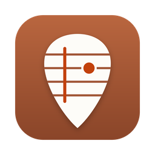
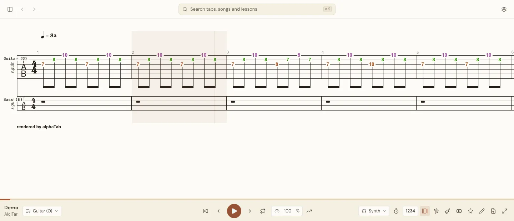

The practice tools tab sites charge for, free and offline, for your own Guitar Pro files.
No account. No subscription.

What it does
Guitar Pro files
Open your own Guitar Pro files, plus MusicXML, with the embedded backing track and a count-in.
Multiple tracks, horizontal view
Show several tracks at once, mute, solo and set the volume of each, and scroll the score sideways.
Speed trainer and A/B loop
Loop a phrase between two points and raise the speed step by step as you get it clean.
Sync to YouTube or your own audio
Line the score up with a video or a recording you own, bar by bar, and play along with the real thing.
Fretboard lit by the playing notes
See each note land on the neck as it sounds.
Tuner and metronome
Tune up and keep time without leaving the window.
First launch on macOS
AlciTar is not yet notarised by Apple, so macOS asks you to confirm it once. Since macOS Sequoia, Control-click and Open no longer skips this check.
- Open AlciTar once. macOS says it cannot verify the app; close that dialog.
- Open System Settings → Privacy & Security.
- Scroll to the message about AlciTar and click Open Anyway.
- Enter your password. After that it opens normally.
Free here, paid elsewhere
| Tool | AlciTar | Songsterr |
|---|---|---|
| Speed control | Free | Plus |
| Loop | Free | Plus |
| Mute and solo | Free | Plus |
| Sync to the original audio | Free | Plus |
| Offline | Free | Plus |
Guitar Pro 8 is a full tab editor at $69.95, one-time. AlciTar plays and practises tabs; it does not edit them.
Requirements
macOS 12 Monterey or later (Safari 17 or later) · Apple Silicon & Intel